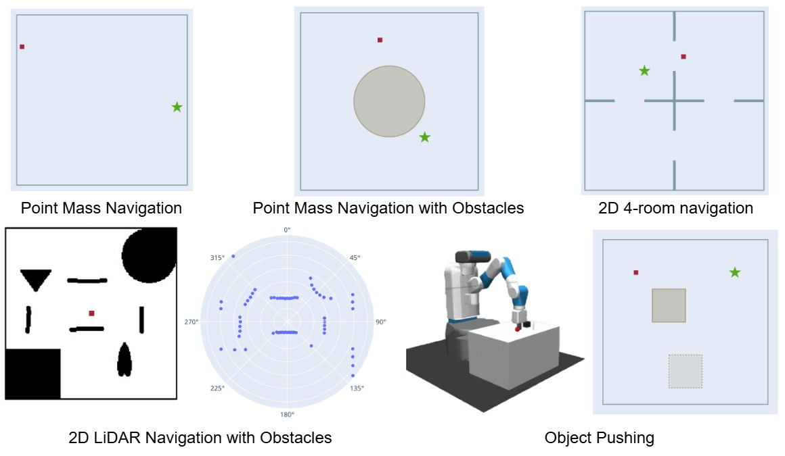
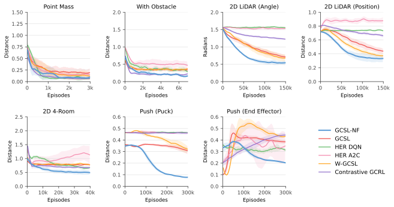
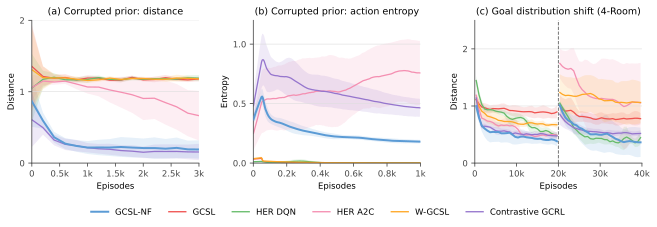

摘要
基于奖励函数的学习和对示范的模仿学习，是训练通过动作与观测和环境交互的自主系统的两种主要途径。然而，二者都需要人为规定每一种待习得的行为；对于目标和运行条件无法在设计阶段完全预见的长期自适应系统，这是一个难题。目标条件监督学习（GCSL）通过自我模仿提供了一种自监督的替代方案：通过有策略地重标注目标，智能体可以从自身经验中学习策略。尽管取得了一定成功，该框架仍有两个明显的局限：（1）仅从自身产生的经验中学习，可能加剧智能体固有的偏差；（2）重标注策略使智能体只关注成功的结果，无法从错误中学习。为解决这些问题，我们提出带负反馈的 GCSL（GCSL-NF）。它对每条轨迹评估两次：相对于重标注的目标给出正向评估，相对于最初设定的目标给出纠正性评估。纠正性目标值来自一个相似度函数，该函数通过对比学习从轨迹诱导的邻域关系中习得，因此既不需要奖励函数，也不需要几何距离。实验表明，GCSL-NF 能够克服初始偏差带来的限制，随着学习推进越来越多地受益于负反馈，并达到或超过基于 GCSL 和 HER 的方法。由于减少了对预先设定的奖励函数的依赖，该方法尤其适用于适应目标多样、易变或难以人工设计的自适应自主系统。
方法
GCSL 用轨迹实际到达的状态重新标注目标，并模仿轨迹中记录的动作。因此，一条没有到达预定目标的轨迹只会被当作到达其他目标的示范，失败本身不产生任何学习信号。如果初始策略存在偏差，智能体会不断强化自己原有的行为。
GCSL-NF 对每条轨迹评估两次。重标注目标提供正向目标值，与 GCSL 相同（损失 L+）。最初设定的目标 g 提供纠正性目标值，即轨迹终点状态与该目标之间的相似度 pφ(sT, g)。原始目标损失是朝向这一目标值的二元交叉熵，并按剩余步数折扣：
Lo(θ) = 𝔼 [ γT−t H( pθ(succ(g) = 1 | st, at), pφ(sT, g) ) ]
策略最小化 L+ + Lo，整个学习过程仍是监督学习，不涉及任何奖励函数。
 图 1. GCSL-NF 概览。智能体采样轨迹，分别用重标注目标和原始目标评估这些轨迹，并更新策略和相似度函数。
图 1. GCSL-NF 概览。智能体采样轨迹，分别用重标注目标和原始目标评估这些轨迹，并更新策略和相似度函数。
轨迹诱导的相似度
两个状态之间的距离取决于环境动力学，而环境动力学事先未知。因此，相似度函数 pφ 从经验回放缓冲区中通过对比学习得到：对一个参考状态，同一条轨迹中时间上邻近的状态作为正样本，邻域之外的状态以及其他轨迹中的状态作为负样本。这样就不需要观测空间中的距离度量；当观测（例如激光雷达扫描）不能反映物理距离时，这一点尤为重要。
 图 2. 从轨迹中学习 pφ。每一行是一条轨迹，每一列是一个时间步。蓝色区域为从参考状态附近的单峰分布中采样的正样本，红色区域为负样本。
图 2. 从轨迹中学习 pφ。每一行是一条轨迹，每一列是一个时间步。蓝色区域为从参考状态附近的单峰分布中采样的正样本，红色区域为负样本。
结果
我们在五个离散动作的目标到达任务上，将 GCSL-NF 与 GCSL、W-GCSL、HER（结合 DQN 和 A2C）以及 Contrastive GCRL 进行比较。在激光雷达导航中，智能体观测到的是测距读数，观测空间中的距离不能反映物理距离；在物体推动任务中，机械臂必须先到达物块，才能把它推向目标。

图 3. 实验环境。红点表示智能体位置，绿色星号表示目标。

图 4. 离散动作任务训练过程中到目标的距离。5 个随机种子的均值，阴影为一个标准差。
GCSL-NF 在所测试的任务上达到或超过基线方法，其中物体推动任务上的提升最大。在连续控制任务（Car Racing、Fetch Reach 和 Fetch Push）中，它与基线方法表现相当，并在 Fetch Push 上取得最低的最终距离。
{% include projects/gcsl_tables.html lang="zh" %}
稳健性
我们在学习开始前把策略预训练到一个固定动作上。GCSL-NF 和 Contrastive GCRL 几乎恢复到无偏差时的表现，而 GCSL、W-GCSL 和 HER DQN 无法恢复。在四房间环境中，目标分布在训练中途切换到对角的房间，策略和回放缓冲区均不重置；GCSL-NF 在切换前后都取得最低的距离，并回到切换前的水平。原始目标损失为每一条未到达指定目标的轨迹提供明确的负信号，从而打破了重标注带来的自我强化。

图 5. 从被破坏的先验中恢复（a、b；Point Mass Navigation），以及在第 2 万回合目标分布改变后重新适应（c；2D 4-Room Navigation）。5 个随机种子的均值，阴影为一个标准差。
在激光雷达导航中加入传感器噪声时，GCSL-NF 的性能平缓下降，而 GCSL 和 W-GCSL 随噪声增大而失效；执行噪声对所有方法的影响都更大。结合动作层面的目标钳制和正向重标注过滤，原始目标损失还能让智能体在测试时继续遵守只在训练中施加的危险区域约束和依赖历史的途经点规则。